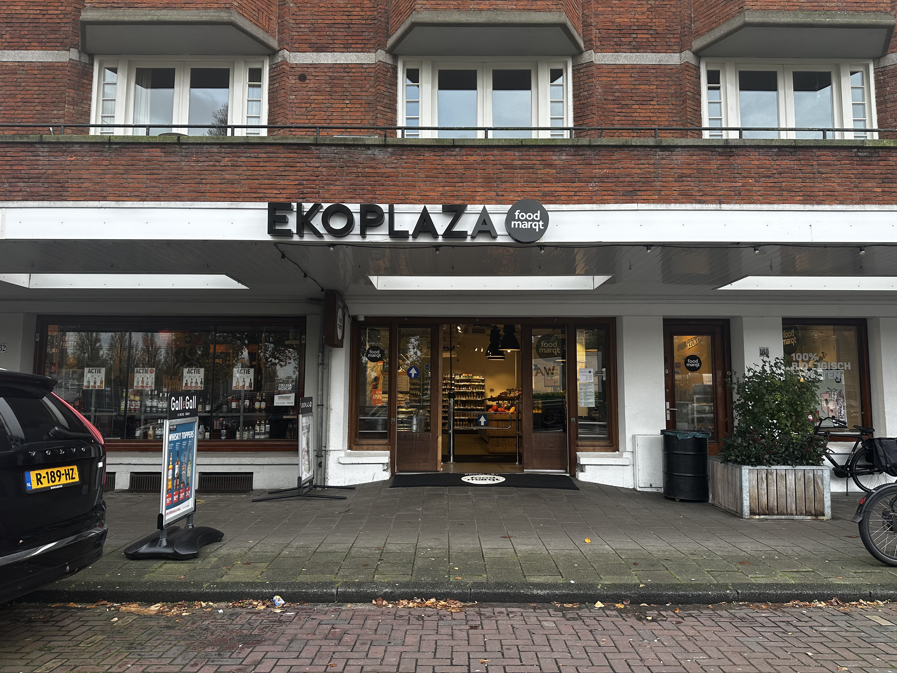

Supermarkten
Amsterdam is de thuisbasis van een groeiend aantal duurzame supermarkten die trots zijn op hun toewijding aan biologische en lokaal geproduceerde producten. In deze winkels staat duurzaamheid centraal, met een focus op milieuvriendelijke opties en het ondersteunen van lokale boeren. Door hier te winkelen, draag je bij aan het verminderen van de ecologische voetafdruk, het stimuleren van de lokale economie en het genieten van verse, hoogwaardige ingrediënten. Ontdek de smaakvolle en verantwoorde keuzes die deze supermarkten te bieden hebben en maak van je boodschappen een positieve stap naar een duurzamere toekomst.
EkoPlaza
Eko plaza is een bekende duurzame supermarktketen met meerdere vestigingen in Amsterdam. De supermarkt is gespecialiseerd in biologische en ecologische producten en biedt een ruim assortiment duurzame mogelijkheden voor bewuste consumenten.
Locaties
Openingstijdens
- maandag: 08:00 - 20:00
- dinsdag: 08:00 - 20:00
- woensdag: 08:00 - 20:00
- donderdag: 08:00 - 20:00
- vrijdag: 08:00 - 20:00
- zaterdag: 08:00 - 20:00
- zondag: 10:00 - 19:00
Productaanbod
Ekoplaza staat bekend om zijn ruime assortiment biologische en ecologische producten, waaronder biologische groenten en fruit, vers brood, biologisch vlees en zuivel, glutenvrije opties, fairtradeproducten en meer. Ze streven ernaar om producten te leveren die milieuvriendelijk en ethisch zijn.
Eigen Review
Mijn persoonlijke ervaring met Ekoplaza is zeer positief. De winkel heeft een gastvrije sfeer en biedt een ruime keuze aan biologische en duurzame producten. Het feit dat ze zich inzetten voor het milieubewustzijn en het ondersteunen van lokale producenten sprak mij erg aan. Het personeel is over het algemeen behulpzaam en deskundig. Ekoplaza is een geweldige plek om verantwoord te winkelen en bij te dragen aan een duurzamere levensstijl.
De Aanzet

De Aanzet is een duurzame supermarkt in Amsterdam die zich toelegt op het aanbieden van biologische, lokale en duurzame producten. Hier vindt u wat informatie over De Aanzet, inclusief locaties in Amsterdam, openingstijden, productaanbod en persoonlijke recensies:
Locaties

Openingstijdens
- maandag: 08:30 - 19:00
- dinsdag: 08:30 - 19:00
- woensdag: 08:30 - 19:00
- donderdag: 08:30 - 19:00
- vrijdag: 08:30 - 19:00
- zaterdag: 08:30 - 19:00
- zondag: gesloten
Productaanbod
De Aanzet onderscheidt zich door het aanbieden van een ruim assortiment biologische, lokale en duurzame producten. Hier vind je biologische groenten en fruit, lokaal gebakken brood, biologisch vlees en zuivel, ecologische schoonmaakproducten en meer. De winkel heeft een sterke focus op het ondersteunen van lokale producenten en het verminderen van de ecologische impact van zijn producten.
Eigen Review
Mijn persoonlijke ervaring bij De Aanzet was zeer positief. Er heerst een vriendelijke en gastvrije sfeer in de winkel. Wat ik erg waardeer is hun inzet voor lokale en duurzame producten die een positieve impact hebben op de gemeenschap en het milieu. Het personeel was over het algemeen behulpzaam en deskundig en ik vond dit een geweldige plek om te winkelen, omdat ik wist dat ik bijdroeg aan een duurzamere consumptie.
Marqt

Marqt is een duurzame supermarktketen in Amsterdam die zich richt op biologische en lokale producten. Marqt heeft meerdere vestigingen in de stad en is een populaire keuze onder bewuste consumenten die waarde hechten aan duurzaamheid en kwaliteit.
Locaties
Openingstijdens
- maandag: 08:30 - 20:30
- dinsdag: 08:30 - 20:30
- woensdag: 08:30 - 20:30
- donderdag: 08:30 - 20:30
- vrijdag: 08:30 - 20:30
- zaterdag: 08:30 - 20:30
- zondag: 08:30 - 20:30
Productaanbod
Marqt staat bekend om haar ruime assortiment biologische, lokale en duurzame producten. Je vindt er verse groenten en fruit, biologisch vlees en vis, zuivelproducten, brood en allerlei andere producten die voldoen aan hoge kwaliteits- en duurzaamheidsnormen. Daarnaast ondersteunt Marqt lokale producenten en biedt seizoensproducten aan.
Eigen Review
Mijn persoonlijke ervaring met Marqt is zeer positief. De nadruk op duurzaamheid en biologische producten geeft mij vertrouwen in de kwaliteit van de producten die ik koop. Daarnaast is de sfeer in de winkel gemoedelijk en is het personeel over het algemeen behulpzaam en deskundig. Het is een geweldige plek om te winkelen omdat ik weet dat ik bijdraag aan een duurzamere voedselvoorzieningsketen. 4 sterren
Odin
Odin is een duurzame supermarkt in Amsterdam gespecialiseerd in biologische en biodynamische producten. De coöperatieve supermarktketen heeft meerdere vestigingen in Nederland, waaronder in Amsterdam, en biedt een breed assortiment duurzame producten aan.
Locaties
Openingstijdens
- maandag: 08:30 - 19:00
- dinsdag: 08:30 - 19:00
- woensdag: 08:30 - 19:00
- donderdag: 08:30 - 19:00
- vrijdag: 08:30 - 9:00
- zaterdag: 08:30 - 18:00
- zondag: 10:00 - 18:00
Productaanbod
Odin staat bekend om zijn assortiment biologische en biodynamische producten. Je vindt er verse biologische groenten en fruit, zuivelproducten, brood, biologisch vlees en vis en allerlei andere duurzame producten. Odin werkt samen met lokale producenten om de transparantie te vergroten over waar zijn producten vandaan komen.
Eigen Review
Mijn persoonlijke ervaring met Odin is zeer positief. De nadruk op biologische en biodynamische producten geeft mij het vertrouwen om boodschappen te kopen die van hoge kwaliteit zijn en het milieu respecteren. Winkels hebben doorgaans een gezellige en gastvrije sfeer. Het personeel is over het algemeen deskundig en bereid om te helpen. Odin is een geweldige keuze voor iedereen die op zoek is naar duurzame, gezonde voeding en gepassioneerd is door milieuvriendelijke praktijken.